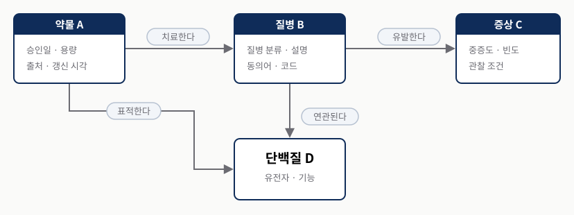
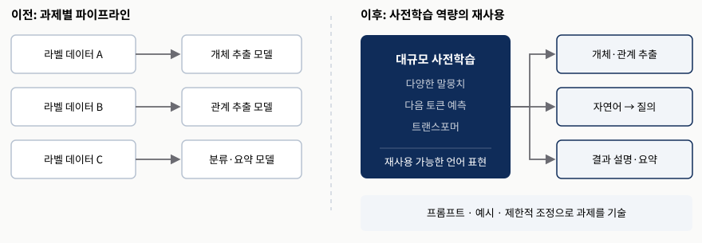
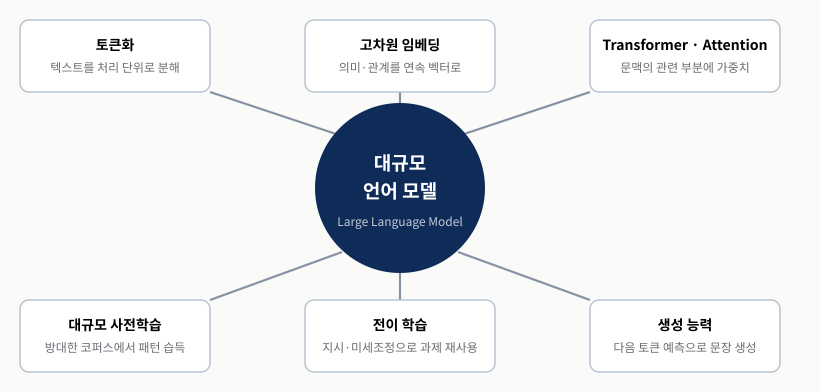
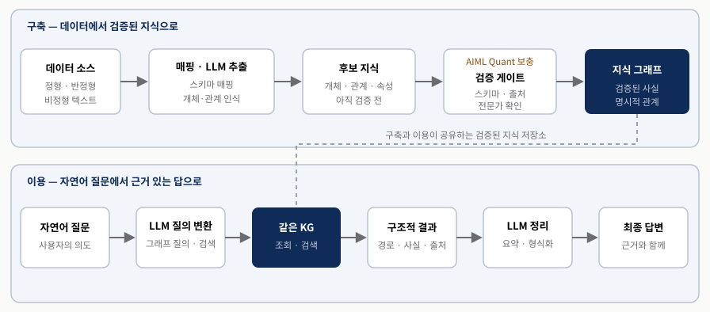
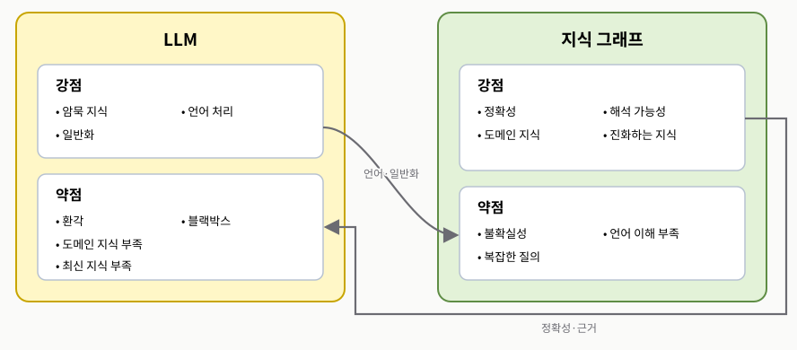
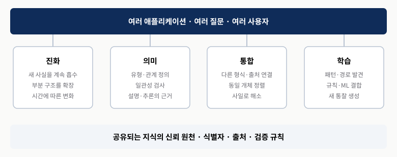

KG BOTTLENECK
지식은 명시적이지만 접근이 어렵다
비정형 텍스트 추출, 여러 홉 질의, 흩어진 결과 설명에 전문성과 비용이 듭니다.
Knowledge Graphs & LLMs in Action · Chapter 1
KG의 검증 가능한 관계와 LLM의 자연어 능력은 어떻게 서로의 빈틈을 메우는가?
두 기술의 장점을 나열하기 전에 각자 막히는 지점을 먼저 짝지어 봅니다.
KG BOTTLENECK
비정형 텍스트 추출, 여러 홉 질의, 흩어진 결과 설명에 전문성과 비용이 듭니다.
LLM BOTTLENECK
환각·오래된 정보·도메인 맥락 부족과 개별 사실의 출처 확인이 문제입니다.
학습 목표 — 구축·질의·요약과 정확성·최신성·설명 가능성을 양방향으로 연결할 수 있어야 합니다.
1장은 KG와 LLM을 따로 이해한 뒤, 양방향 보완을 실제 적용과 그래프 기술 선택으로 내려보냅니다.
구축·질의·설명
전이·규모·토큰
언어 ↔ 관계 지식
사례·RDF/LPG·의미





데이터 사일로마다 지식과 규칙을 다시 구현하면 비용과 불일치가 늘어납니다. 공유 KG는 여러 애플리케이션이 같은 개체·관계·출처를 활용하도록 해 지능적 행동의 공통 기반을 제공합니다.
여러 앱이 같은 개체·관계·출처를 사용합니다.
변경·충돌·버전의 소유자를 정합니다.
인용된 5–15% 추산을 보편 보장으로 읽지 않습니다.

의료와 고객 지원은 도메인이 다르지만 여러 원천의 관계 지식, 비정형 문서, 자연어 질문, 근거 있는 다음 행동이 동시에 필요하다는 공통점이 있습니다. 결합 여부는 유행이 아니라 문제의 모양으로 판단해야 합니다.
여러 원천의 개체와 관계가 중요합니다.
문헌·정책·대화 기록을 해석해야 합니다.
질문·요약·설명과 검증이 함께 필요합니다.
KG는 유전자·단백질·질병·약물과 그 관계 유형을 연결해 여러 규모의 생물학적 상호작용을 탐색하게 합니다. LLM은 논문·임상 보고서 같은 비정형 문서에서 개체와 관계 후보를 찾고 연구 질문을 언어로 다룰 수 있습니다.
유전자·질병·약물과 검증 상태를 연결합니다.
문헌에서 후보 관계와 가설을 찾습니다.
가설을 확정 사실로 저장하지 않습니다.
KG는 고객·제품·계약·정책처럼 대화에 필요한 개념과 관계를 구조화하고, LLM은 사용자의 의도를 해석하고 되묻고 설명합니다. 구조화된 지식이 없으면 답변은 유창해도 일반적이거나 낡은 정보에 머물 수 있습니다.
고객·제품·계약·정책·권한을 연결합니다.
의도 파악·되묻기·응답을 맡습니다.
타 고객 노출과 만료 정책을 통제합니다.
데이터 사일로를 조화시키고, 정형·비정형 원천을 의미 있게 연결하고, 변화하는 구조와 provenance를 추적해야 한다면 KG가 유력합니다. 고급 검색·추천·네트워크 분석처럼 관계 구조 자체가 가치의 원천인 경우도 마찬가지입니다.
사일로·관계·출처·진화가 병목입니다.
비정형 추출·질문·대화·요약이 병목입니다.
대표 질문과 작은 스키마로 검증합니다.
RDF는 주어–술어–목적어 트리플로 지식을 표현하고 SPARQL로 질의합니다. 전역 술어와 웹 표준을 사용해 서로 다른 그래프를 연결하고 온톨로지 기반 의미 추론을 하는 데 적합합니다.
표준 트리플·상호운용성·의미 추론에 강합니다.
관계 속성·경로 순회·애플리케이션 질의에 강합니다.
우열보다 필요한 최적화와 혼합 가능성을 봅니다.
분류체계는 탈것 ⊃ 자동차 ⊃ 세단처럼 범주의 세로 질서를 만듭니다. 온톨로지는 여기에 “자동차와 오토모빌은 같다”, “자동차와 자전거는 서로소다” 같은 가로 규칙과 개수 제약을 더해 기계 추론의 근거를 제공합니다.
넓음–좁음의 계층을 정리합니다.
동일성·서로소·제약을 더합니다.
현재 문제에 딱 필요한 만큼의 의미를 둡니다.
이 책은 목표를 먼저 정하고 필요한 데이터와 스키마를 모델링한 뒤, 정형 원천을 매핑하고 LLM으로 비정형 텍스트의 개체·관계 후보를 추출하는 흐름을 따릅니다. 수집한 정보는 무결성과 정확성을 검증한 뒤 그래프에 통합합니다.
비즈니스 질문에서 필요한 지식을 정합니다.
정형 매핑과 비정형 추출을 검증합니다.
분석·질의·시각화·자연어 응답으로 확장합니다.
LLM은 KG의 구축·질의·요약에서 각각 어떤 장벽을 낮추는가?
KG의 정확성·최신성·설명 가능성은 LLM의 어떤 약점과 짝을 이루는가?
내 문제에 KG나 LLM이 필요한지 어떤 데이터·관계·인터페이스 질문으로 판단할 것인가?
THREE TAKEAWAYS
추출·질의·요약의 접근 비용을 낮춥니다.
사실·관계·출처·상태를 명시적으로 유지합니다.
후보·검증·검색·응답·갱신을 구분합니다.
Q&A